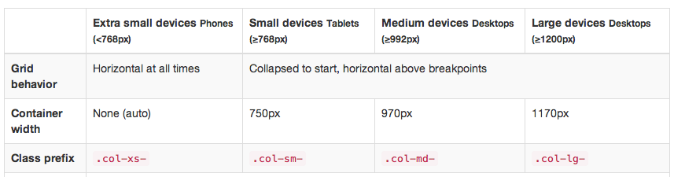

Bootstrap
Grid มาช่วย และมีการคำนวนค่าหน้าจอพร้อมกับปรับขนาดของ Web ให้แสดงผลกับทุกๆ หน้าจอโดยอัตโนมัติ ซึ่งเราสามารถปรับแต่งให้แต่ละหน้าจอแสดงผลต่างๆ กันได้ ตามขนาดของหน้าจอ
1. ในการสร้าง Grid system นั้น Bootstrap แนะนำให้เราสร้างแถวและคอลัมน์ไว้ใน container โดยคลาส container ของ Bootstrap แบ่งออกเป็น 2 ประเภท คือ container และ container-fluid สำหรับ container นั้นจะแสดงผลเนื้อหาตามที่เรากำหนดความกว้างของหน้าจอ
ส่วน container-fluid นั้นจะแสดงผลเนื้อหาเต็มความกว้างของหน้าจอของเรา โดยในที่นี้คือเราจะใช้คลาส container
<div class="container"> </div>
2. สร้างแถวโดยใช้ class="row" ภายใต้ class="container" โดยเราสามารถที่จะสร้างแถวได้ไม่จำกัด แต่แถวเหล่านั้นต้องอยู่ภายใต้ class="container"
<div class="container">
<div class="row"></div>
</div>
3. แต่ละแถวของ Grid system นั้นมีคอลัมน์ในแต่ละแถวได้ 12 คอลัมน์ โดยคอลัมน์ของ Grid system แบ่งออกเป็น 4 ประเภทคือ
